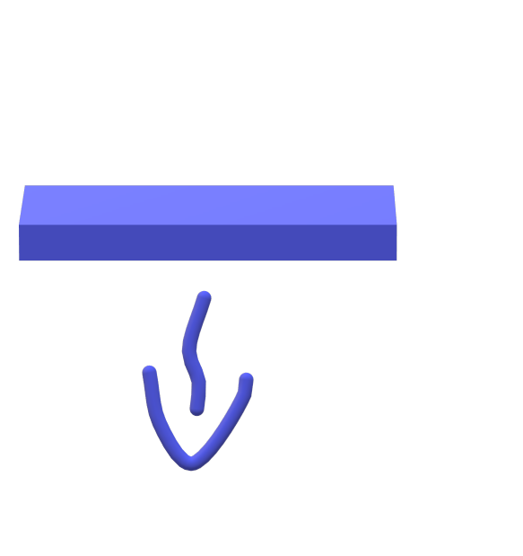
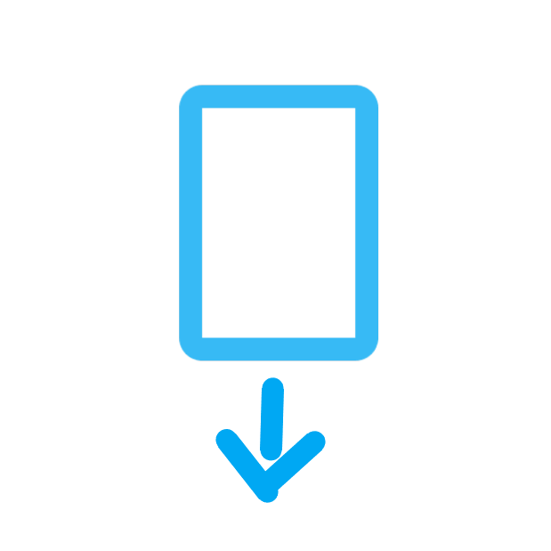
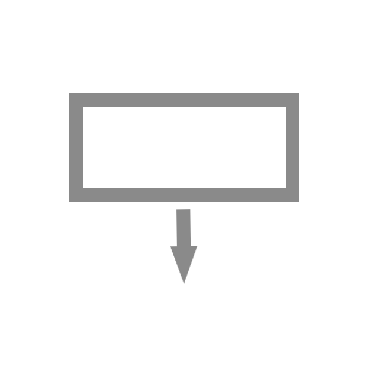
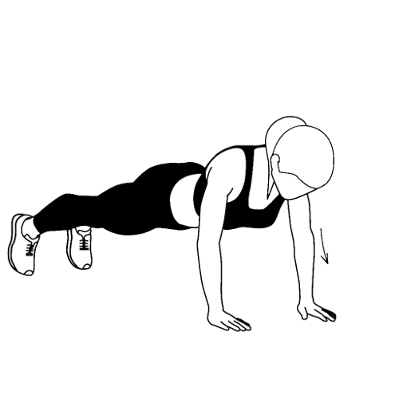

Ο
📷
can
Kein Ton
Standard-Ton
Eigene Audio-Datei
Datei bleibt lokal im Browser.
0
x
0
C
D
E
F
G
A
C
x
Steuerung:
Sensor (direkt)
Phase (Hocke/Stand)
Speed (Abweichung × Gain)
Amplitude (|Abw.|² + Totzone)
Inertia (Abw. → Beschleunigung)
Pump (nur positiv, Ladung)
Nullen
:
Anzahl:
0
x
‹
›
Tag




gesamt
Ø
x